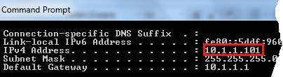

Agendamento de
Atendimento 0.4
Instalação
A instalação completa (incluindo o banco de dados PostgreSQL) deve ser realizada apenas no servidor. O
servidor precisará ficar ligado durante a utilização do sistema. Nos demais computadores
que utilizarão o programa, deve-se optar por realizar
a instalação mínima ou customizada (caso precise instalar a JVM, Máquina Virtual
Java, durante a instalação).
Manual do Usuário
Cadastrar
Para agendar um
atendimento, o usuário deve escolher a data, horário, e preencher os campos:
nome, cpf e telefone. Caso
seja inserido um número de CPF, este será aceito apenas se passar na
validação. Ao clicar em Salvar os dados
são enviados ao banco, e ficam disponíveis na aba de acompanhamento. Caso o usuário
tenha permissão ao agendamento prioritário, há a opção de inserir um horário
manualmente, além de escolher as opções de horário oferecidas pelo sistema. Ao
inserir um horário manualmente, deve-se atentar para o fato que somente
horários entre 00:00 e 23:59 são aceitos. O símbolo de
dois pontos, usado como separador, é inserido automaticamente.
Quando os horários
disponíveis são carregados, o campo data é automaticamente ajustado para exibir
o dia útil mais próximo que oferece horários para agendamento. Usuários sem
acesso ao agendamento prioritário estão limitados a selecionar datas com
horários disponíveis para agendamento. Neste caso, ao tentar selecionar uma
data sem horário para agendamento, o campo data é atualizado para a data
posterior mais próxima que oferece horários disponíveis.
Usuários que tem permissão
ao agendamento prioritário podem selecionar datas arbitrariamente (independente
da existência de horários disponíveis). Entretanto, é necessário marcar o campo
prioritário antes de tentar escolher a data. Deve-se estar atento ao realizar
agendamentos prioritários, pois as restrições de expediente, incluindo feriados,
não são consideradas no momento do agendamento!
Acompanhar
Para acompanhar o agendamento, selecione o atendente que deseja monitorar.
As atualizações dos agendamentos são automáticas, ocorrendo a cada 1/4 (um
quarto) do intervalo do tempo de atendimento do atendente. Desta forma, para um
atendente cujo tempo de atendimento é 10 minutos, por exemplo, ocorrem 4 atualizações da tabela de agendamentos durante o
transcorrer do tempo de 1 atendimento.
Para atender um solicitante, selecione o solicitante na tabela de
agendamento e clique em atender. Quando o solicitante é atendido, seu status
modificado de pendente para atendido e ele não mais aparece na opção
de acompanhamento. Entretanto, é possível visualizá-lo na janela de
configuração, na aba atendimentos realizados.
Para liberar um horário sem atender o solicitante utilize a opção
excluir. Quando o solicitante é excluído os seus dados são removidos do sistema
permanentemente (sendo excluídos para fins estatísticos).
Para registrar o não comparecimento de um solicitante, clique com o
botão direito do mouse sobre o solicitante e selecione a opção desistente no menu popup.
Quando esta operação é realizada o agendamento tem seu status modificado de pendente para desistente e não mais aparece na opção de acompanhamento. Entretanto,
o agendamento continua registrado no sistema inviabilizando a marcação de novo
agendamento para o mesmo horário.
Para imprimir a relação de agendamentos para uma data, clique com o
botão direito do mouse sobre um solicitante da tabela de agendamentos e
selecione a opção imprimir no menu popup. A opção de imprimir irá
gerar um relatório dos atendimentos agendados para o atendente selecionado.
Configurar
Permite configurar
detalhes referentes à conexão com o banco de dados, atendentes, usuários e
restrições de expediente. Também é possível visualizar os atendimentos
realizados, estatísticas e excluir os registros de atendimentos realizados no
banco de dados.
Manual do Administrador
Banco de Dados
Permite configurar as
propriedades da conexão com banco de dados (servidor). Em localhost,
insira o IP do computador onde o PostgreSQL
foi instalado. Também podem ser configurados o
usuário, senha e nome do banco. Para descobrir o IP do servidor, abra o prompt no servidor e digite ipconfig.
O ip será exibido como mostra a
imagem a seguir.

Atendentes
Permite adicionar e remover atendentes. Cada atendente é responsável por
realizar o atendimento ao público que se inscreveu para ser atendido por ele.
Cada atendente é associado a um horário de início e final de expediente, bem
como horário de saída e retorno do almoço. Além destes dados, cada atendente
possui seu próprio tempo de atendimento (em minutos).
Atendentes podem estar
aptos a realizarem novos agendamentos ou não. Mesmo que um atendente esteja
impossibilitado de realizar atendimentos, é possível efetuar o acompanhamento
dos agendamentos realizados previamente.
O nome do atendente
deve ser único na lista de atendentes.
Alteração de expediente
Esta opção permite
registrar dias com expediente reduzido ou expandido. Para isto, deve-se adicionar
uma data e informar o horário de inicio e final do expediente do dia
especificado. Também é possível redefinir o horário de saída e retorno do
almoço. O campo “motivo” é usado para identificar o motivo para a alteração de
expediente, por exemplo, "Recesso", “Carnaval", etc. Caso não
haja expediente, deve-se marcar a opção "Não haverá expediente".
Desta forma não será disponibilizado nenhuma opção de horário para o dia
cadastrado. É possível selecionar mais de um dia por vez no calendário (por
exemplo, uma semana inteira, ou sábados consecutivos). Para selecionar vários
dias, mantenha pressionada a tecla Ctrl ao clicar com
o mouse nas datas.
Observação: a
restrição é aplicada apenas para o atendente ao qual está associada e para o
dia que foi registrado. Observe que para registrar um feriado, por exemplo, é
necessário registrar que não haverá expediente para cada um dos atendentes
registrados no sistema que estejam ativos (aceitando agendamento).
Usuários
Esta opção permite
adicionar, editar e remover usuários. O controle de acesso do usuário permite
definir cinco visualizações: cadastramento (C), acompanhamento (A),
configuração (F), agendamento prioritário (F) e exclusão (E). Para o agendamento
prioritário funcionar, é necessário que a opção cadastramento esteja ativa
simultaneamente. Para a exclusão funcionar, é necessário que a opção
acompanhamento esteja ativa simultaneamente.
Atendimentos Realizados
Este opção lista a
relação de atendimentos realizados pelos servidores. Os atendimentos que foram
registrados, mas que foram excluídos através da tela de acompanhamento não são exibidos aqui. Os atendimentos relacionados nesta aba
são usados para computar estatísticas sobre o tempo de atendimento e utilização
do tempo dos atendentes.
Limitações
1.
O tempo de
atendimento registrado para cada servidor deve ser inferior a 59 minutos.
2.
Atendentes
diferentes devem ter nomes distintos.
Contato:
Diego Machado Dias
(diegodias.m@gmail.com)